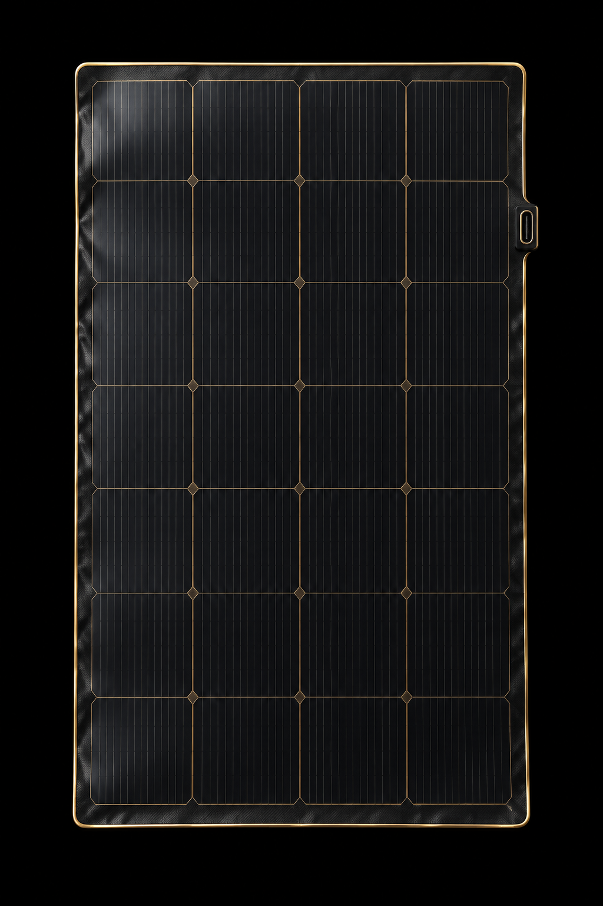
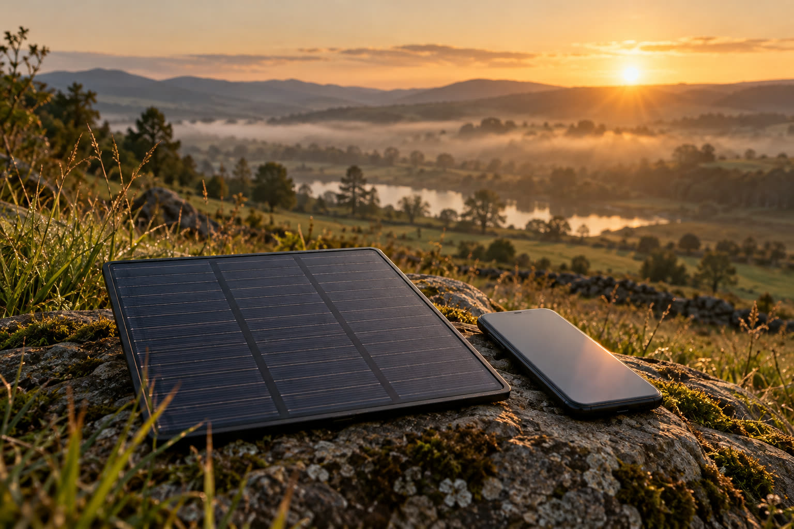

USB-C出力。ケーブル一本でiPhoneと直結。
ハウス、河川、非常時のかばんの中へ。
iPhoneが報告するUSB-C入力のV・A・W。
1秒周期。有効値だけを積算。

記録は、ここから始まる。
その日、その場所にしかない一回の計測。
SolarGaugeが残す、現場の声。
ハウスの東側と南側、どちらに置くかをずっと感覚で決めていました。朝の30分を二日測っただけで、答えが数字で出た。それだけで十分でした。
外付けの電力計を持って川まで行くのが億劫だった。iPhoneとパネルとケーブルだけで済むようになって、測る回数が増えました。
「欠測を0Wにしない」と最初に言われたとき、信用できると思いました。曇った時間を正直に空白で残してくれる。
CSVに時刻とタイムゾーンとセッションIDが揃っているので、あとから比較表を作るのが楽になりました。